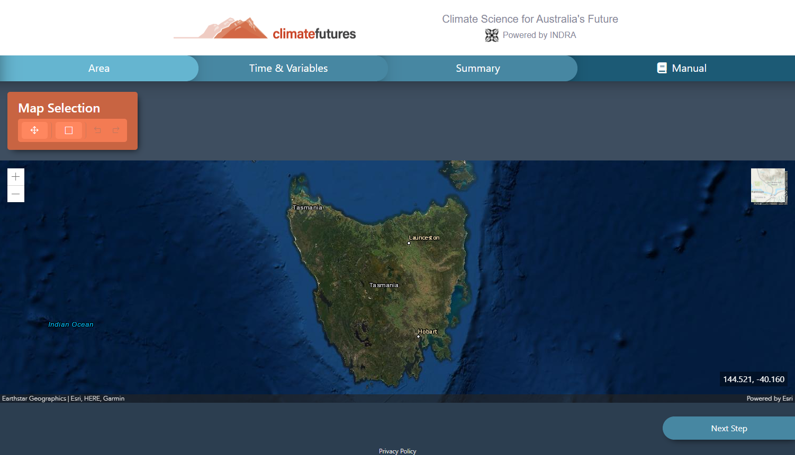
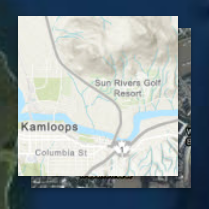
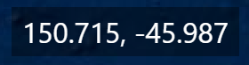

In this step, you will be able to select the area to search for geographical data. The area of choice can be selected by drawing a rectangular bounding box around the area of interest.
This step contains a large interactive map with many tools to help you use it and select your desired area.
Lets have a look at the different components and tools in this step you can use to select your desired extraction area.
The toolbox is where you access controls related to selecting the desired area and modifying that selection.

The map can be zoomed in or out for convenience in selecting larger or smaller areas.
The zoom controls can be accessed in the top left of the map below the toolbox.
The plus (+) sign zooms the map inwards while the minus (-) sign zooms the map outwards.
Zooming can also be quickly accessed by scrolling the mouse wheel up or down.
By default, the map has a hybrid style (a mix of satellite and labelling) but this can be changed to a topographical vector style if desired.
The button to toggle map styles can be found in the top right of the map and is used by simply clicking it once.
The latitude and longitude position of your mouse cursor is displayed in the bottom right of the map. These numbers update constantly as you move your mouse.
To select your area of choice using the interactive map, first click and drag the map to find your desired area, you may also zoom in our out to fit your desired area on the screen.
Once you have found it, select the Draw Rectangle tool and click and drag on the map from one point to another, a rectangle will appear from the position of your first click stretching to the position of your mouse cursor
Once you finish drawing this new rectangle, this is the area of selection for your data! You can change it from this point on by:
Now that you have outlined your desired area for climate data extraction it is time to move onto the next step!